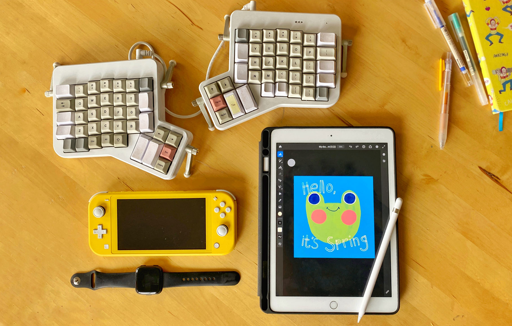

Design Thinking
Despite the risk of sounding too dramatic, I'll still say: design thinking changed my life.In college, just being part of the Design for America chapter at UC Davis has afforded me four years of free Adobe CC subscriptions and two paid trips to leadership conferences. At work, it's allowed me to step out as a thought leader in UI/UX despite being the youngest developer in the team.
Design thinking has allowed me to bring my full self to anything that I do, in and out of work. I truly would not be the same person without it.

My very first design thinking conference!
Tools

Here's what I love and use daily:
- ErgoDox EZ Shine: This mechanical keyboard changed my life. I didn't realize how much standard keyboards hurt my wrists until I went a month without my ErgoDox. I now make it a point to bring these with me whenever I have to work remotely for 2+ days.
- Switch Lite: Whenever I get stuck on something, I refresh my brain by taking a quick break to play Animal Crossing or Oninaki.
- Fitbit Versa: I like to use my Fitbit as a reminder to get up and stretch my legs every hour. I also have really enjoyed tracking my pace and mile time with this during my weekend runs.
- iPad (2019) + Apple Pencil: I've only had it for 6 months (it was an early Christmas gift to myself), but I've really enjoyed it as (1) my portable whiteboard (if I'm not using paper, I sketch mockups on Notability) and (2) annotation workhorse. Also, since we're all stuck indoors, I've decided to use it to learn how to draw digitally! I use Adobe Fresco and reference artists on YouTube.
Not pictured (yet), but worth nothing: I have a slight notebook obsession. By my last count, I have 27 new and used notebooks and 14 pens (mostly Muji). I always carry at least one of each.
If I'm travelling, I bring three notebooks: (1) an undated planner that serves as my travel diary; (2) a thin Muji notebook where I do most of my trip planning, and also what I'll carry with me on trips to stash receipts and other paper mementos into; (3) my bright yellow journal (peaking at the top right of the picture) where I work out my ideas and dump all my introspection into.
At work, I keep two: (1) an A5 Muji notebook where I do my pre-work planning, and (2) a B5 notebook from Daiso where I write out a more detailed plan (think algorithms, pseudocode, etc) and work out any problems. I also use the Daiso notebook to leave any notes for myself about unfinished tasks I should tackle the next day.
At the beginning of 2020, I decided to use sticky notes instead of a planner to set my agenda for work that day.
You can read more about my work process here.
If I'm travelling, I bring three notebooks: (1) an undated planner that serves as my travel diary; (2) a thin Muji notebook where I do most of my trip planning, and also what I'll carry with me on trips to stash receipts and other paper mementos into; (3) my bright yellow journal (peaking at the top right of the picture) where I work out my ideas and dump all my introspection into.
At work, I keep two: (1) an A5 Muji notebook where I do my pre-work planning, and (2) a B5 notebook from Daiso where I write out a more detailed plan (think algorithms, pseudocode, etc) and work out any problems. I also use the Daiso notebook to leave any notes for myself about unfinished tasks I should tackle the next day.
At the beginning of 2020, I decided to use sticky notes instead of a planner to set my agenda for work that day.
You can read more about my work process here.
Travel
I do my absolute best to have a trip planned at least every other month because there's nothing more fulfilling to me than being able to take the weekend to explore. In 2019, I went to Hong Kong in January, Spain in August, and Japan in November. I also went to Baltimore, Cincinnati, Chicago, Half Moon Bay, Lexington, Louisville, Monterey, Nashville, New York City, and the Pinnacles National Park. (I'm currently working on my 2019 Travel Diary, so I'll share that here when it's done.)In 2020, I'd like to go to New Zealand (mostly for the hikes) and Taiwan (almost entirely because of food). Please send recommendations my way if you have them!
YouTube
Outside of work, almost all of my screentime is spent on YouTube. Here's my most favorite channels:- Evelyn From The Internets (Is it legal to be this inspirational, creative AND funny at the same time? Also, huge props to her younger brother (Baby Blo) who sometimes helps with the video graphics.)
- furrylittlepeach (Australia-based artist whose energy and creativity inspires me to no end.)
- Michelle Choi 최혜림 (A wonderfully creative vlogger and an even better friend.)
- Samuel Suresh (Beautifully shot study tutorials and even more beautiful digital notes. Please do yourself a favor and watch this vlog. You can thank me later.)
- simply by christine (Another great vlogger/friend: she shares tips on how to live more sustainably in simple, beautifully shot videos.)
- TwoSetViolin (Two violinists with hilarious antics and amazing musicality. Huge props to their video editor who help make their videos so entertaining.)
Iced lattes
One of my favorite parts about living in the Bay Area is the abundance of milk tea and coffee shops. I love spending a leisurely Saturday trying a new place or ordering from my favorites (Voyager Coffee, Happy Lemon, Sinceretea), while catching up with friends or working on personal projects.It's so embedded in my weekend routine that I actually have a line for "coffee/boba" in my monthly budget.
Movies
I am an avid movie-goer, but I love animated movies, documentaries, and the Marvel Cinematic Universe franchise the most. When I'm not dragging my friends to watch a Marvel movie premiere on my birthday (May 2), I'm at home, making full use of my personal projector and subscriptions to Netflix and Amazon Prime.To name a few of my favorites from those genres:
- Animated: "Howl's Moving Castle", "Spider-Man: Into the Spider-Verse", "The Boy and The Beast"
- Documentaries: "Chef's Table", "Paris is Burning", "Planet Earth"
- Marvel: "Black Panther", "Marvel's The Avengers", "Thor: Ragnarok"
Music
I've been listening to these Spotify playlists religiously: Beast Meets West, Butter, Lorem, and Road Trip to Tokyo.At work, I'm usually listening to All-Nighter or Lo-Fi Beats. When I really need to focus, I just listen to Yo-Yo Ma play Bach's "Cello Suite No.1 in G Major" on repeat. (Here's a super cool video that explains the magic behind the suite's Prelude.)